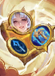
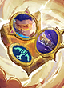
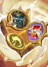
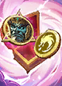
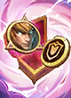
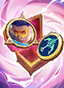

Screenshot

2 baris hero dikenali dari ikon; dianalisa: semua baris sebagai satu papan. Crystal tidak terlihat dari ikon: isi --crystals bila ada.
Papan: Kishin 6, Phasewarper 3, Shadeweaver 3
 Hylos
Hylos  Franco
Franco  Lancelot
Lancelot  Lunox
Lunox  Angela
Angela  Clint
Clint  Karrie
Karrie  Kadita
Kadita  Melissa
Melissa
Go Go Card terdeteksi: Kagura's Power Purest Power Ⅱ Uncertain Fortune
Ringkasan
Sinergi aktif
 Kishin 6
Kishin 6 Phasewarper 3
Phasewarper 3 Shadeweaver 3
Shadeweaver 3 Marksman 2
Marksman 2
Slot & biaya
9/9 hero di Level 9 · total 31 Gold harga dasar · crystal: Kishin
Commander
 Kagura (Daya Tahan)
Kagura (Daya Tahan)
Catatan otomatis
- Belum aktif: Dauntless 1/2 (Franco); Defender 1/2 (Hylos); Dragoncaller 1/2 (Clint); Mage 1/2 (Kadita); Scavenger 1/2 (Angela); Stargazer 1/2 (Lunox); Weapon Master 1/2 (Franco).
- 2 hero 5 Gold (Lancelot, Melissa): masing-masing hanya 9 salinan di pool; ★2 butuh 3 salinan.
- Lunox: Patch 20/10 (server) Hybrid ATK ★2: 200 → 185
Hero
| Hero | Harga | Sinergi | Stat | Skill |
|---|---|---|---|---|
| Hylos | 2 Gold | Shadeweaver, Defender | ★2: HP 4020, ATK 175 | Law and Order |
| Franco | 3 Gold | Kishin, Dauntless, Weapon Master | ★2: HP 5525, ATK 205 | Hook Shock |
| Lancelot | 5 Gold | Kishin, Phasewarper | ★2: HP 7335, ATK 365 | Phantom Execution |
| Lunox | 4 Gold | Kishin, Stargazer | ★2: HP 5580, ATK 185* | Power of Chaos: Darkening |
| Angela | 2 Gold | Kishin, Scavenger | ★2: HP 3070, ATK 130 | Love Waves |
| Clint | 3 Gold | Dragoncaller, Phasewarper | ★2: HP 3905, ATK 210 | Quick Draw |
| Karrie | 4 Gold | Kishin, Marksman | ★2: HP 5580, ATK 235 | Speedy Lightwheel |
| Kadita | 3 Gold | Shadeweaver, Mage, Phasewarper | ★2: HP 3905, ATK 155 | Ocean Ode |
| Melissa | 5 Gold | Shadeweaver, Marksman | ★2: HP 6415, ATK 330 | Eyes on You! |
* = angka Patch server (bukan file game).
Sinergi
| Sinergi | Jumlah | Tingkat aktif | Tingkat berikutnya |
|---|---|---|---|
| Kishin | 6 (+1 crystal) | 6: Mendapatkan 1 Equipment Kishin tambahan. Hero Kishin mendapatkan 36 Hybrid DEF. | +4 ke 10: Dyrroth |
| Phasewarper | 3 | 3: 15% Peningkatan DMG; Memulihkan 50% HP | maks |
| Shadeweaver | 3 | 3: Memberikan 50% ATK Speed dan menyebabkan airborne ke lawan selama 1 detik. | maks |
| Marksman | 2 | 2: Semua rekan mendapatkan 5% ATK Speed. Hero Marksman mendapatkan 20% ATK Speed tambahan. | +2 ke 4: Granger, Miya, Wanwan, Irithel |
 Dauntless Dauntless | 1 | belum aktif | +1 ke 2: Uranus, Balmond, Hilda, Lolita, Alice |
 Defender Defender | 1 | belum aktif | +1 ke 2: Minotaur, Edith, Tigreal, Atlas, Baxia |
 Dragoncaller Dragoncaller | 1 | belum aktif | +1 ke 2: Eudora, Balmond, Gusion, Zilong, Badang |
 Mage Mage | 1 | belum aktif | +1 ke 2: Vale, Zhuxin, Gord, Vexana, Odette |
 Scavenger Scavenger | 1 | belum aktif | +1 ke 2: Phoveus, Sora |
 Stargazer Stargazer | 1 | belum aktif | +1 ke 2: Eudora, Luo Yi, Karina, Mathilda, Nana |
 Weapon Master Weapon Master | 1 | belum aktif | +1 ke 2: Cici, Martis, Suyou, Zilong, Thamuz |
Jalur ultra
- Kishin 10: butuh +4 lagi (Dyrroth + crystal). Tingkat 10: Equipment ditingkatkan menjadi Supreme. Hero Kishin mendapatkan 600 Hybrid DEF.
Ultra faksi 6 hero = 6 hero + 1 crystal Pilihan + 3 crystal biasa (sumber acak).
Stok & peluang toko (Level 9)
| Harga | Hero di lineup | Salinan per hero | Peluang toko |
|---|---|---|---|
| 1 Gold | - | 25 | 13% |
| 2 Gold | Hylos, Angela | 21 | 22% |
| 3 Gold | Franco, Clint, Kadita | 18 | 25% |
| 4 Gold | Lunox, Karrie | 14 | 26% |
| 5 Gold | Lancelot, Melissa | 9 | 14% |
★2 = 3 salinan, ★3 = 9 salinan; pool dipakai bersama semua pemain.
Crystal dari Go Go Box
Peluang crystal satu sinergi tertentu (mis. Kishin, Marksman) muncul di Go Go Box, bila bobotnya sama:
| Go Go Box | Crystal sinergi | Peluang sinergi tertentu |
|---|---|---|
| II-6 | 1–2 dari 15 | 7–13% |
| III-6 | 2–2 dari 15 | 13–13% |
| IV-6 | 3–4 dari 15 | 20–27% |
| V-6 | 3–4 dari 15 | 20–27% |
| VI-6 | 3–4 dari 15 | 20–27% |
| VII-6 | 3–4 dari 15 | 20–27% |
| VIII-6 | 3–4 dari 15 | 20–27% |
Urutan memilih dari HP terendah: pemain HP tinggi bisa kehabisan.
Commander Kagura
- Lv 1+ Aktif: Shield Umbrella — Selama Fase Persiapan, kamu bisa memilih Hero untuk mendapatkan Shield. Saat HP Hero tersebut berada di bawah 50% untuk pertama kali dalam pertarungan, Hero tersebut akan mendapatkan Shield sebesar 60% Max HP.
- Lv 2+ Pasif: Yin Yang Gathering — Nilai Shield meningkat menjadi 125% Max HP.
- Kartu Power Kagura's Power — Pilih 1 Hero. Saat pertarungan dimulai, Hero tersebut mendapatkan 20% Hybrid Lifesteal dan 30% Hybrid ATK. Mendapatkan 9 Gold.
Go Go Card terkait
| Kartu | Tingkat | Efek |
|---|---|---|
| Power | Pilih 1 Hero. Saat pertarungan dimulai, Hero tersebut mendapatkan 20% Hybrid Lifesteal dan 30% Hybrid ATK. Mendapatkan 9 Gold. | |
| Oranye | Mendapatkan Magic Crystal Weapon Master, War Axe, dan Martis. | |
| Oranye | Mendapatkan Magic Crystal Dauntless, Antique Cuirass, dan Balmond. | |
| Blessing Defender | Oranye | Mendapatkan Magic Crystal Defender, Ancient Wrath, dan Hylos. |
 Mage's Blessing | Oranye | Mendapatkan Magic Crystal Mage, Spellblade Talisman, dan Zhuxin. |
 Marksman's Blessing | Oranye | Mendapat Magic Crystal Marksman, Golden Staff, dan Granger. |
| Oranye | Mendapatkan Magic Crystal Stargazer, Ice Queen Wand, dan Luo Yi. | |
| Oranye | Mendapatkan Magic Crystal Kishin, Peti Equipment, dan Angela. | |
 Dragoncaller's Blessing | Oranye | Mendapatkan Magic Crystal Dragoncaller, Peti Equipment, dan Balmond. |
| Ungu | Tingkatkan Equipment eksklusif Kishin ke versi yang diperkuat dan dapatkan 5 kesempatan refresh Toko gratis. | |
| Ungu | Mendapatkan Magic Crystal Kishin dan Angela. | |
 Dragoncaller's Badge | Ungu | Mendapatkan Magic Crystal Dragoncaller dan Balmond. |
| Ungu | Mendapatkan Magic Crystal Dauntless dan Balmond. | |
 Badge Defender | Ungu | Mendapatkan Magic Crystal Defender dan Hylos. |
| Mage's Badge | Ungu | Mendapatkan Magic Crystal Mage dan Zhuxin. |
 Marksman's Badge | Ungu | Mendapat Magic Crystal Marksman dan Granger. |
| Ungu | Mendapatkan Magic Crystal Stargazer dan Luo Yi. | |
| Ungu | Mendapatkan Magic Crystal Weapon Master dan Martis. | |
| Ungu | Setiap kehilangan 30% HP, Hero Defender memberikan Magic DMG sebesar 10% dari Max HP mereka ke lawan di sekitar. | |
| Ungu | Saat memiliki Shield, Hero Dauntless membesar dan mendapatkan 3% HP & Hybrid ATK setiap detik. Pada detik ke-5, efek ini mencapai batas maksimum dan memberikan 8% HP & Hybrid ATK tambahan. | |
| Ungu | Setiap kali menggunakan skill, Hero Weapon Master memberikan Physical DMG sebesar 130% dari total Physical ATK mereka ke lawan di sekitar. | |
| Ungu | Hero Marksman mendapatkan 50% ATK Speed pada awal pertarungan. Bonus ini akan berkurang selama 10 detik. | |
| Ungu | Ketika Hero Stargazer menggunakan skill, mereka memberikan Magic DMG sebesar 65% dari Magic ATK-nya ke 2 lawan acak. | |
| Ungu | Skill Hero Mage berpeluang 60% untuk memberikan 150% DMG. |
Equipment terkait sinergi
| Equipment | Jenis | Efek |
|---|---|---|
 Guren Chakram Guren Chakram | Eksklusif Sinergi | +20% Lifesteal; +20% Spell Vamp; Guren: Pembawa Equipment mendapatkan Peningkatan DMG. Tingkatkan tier Equipment untuk memperkuatnya. Mortal: Mendapatkan 25% Peningkatan DMG. Refined: Mendapatkan 35% Peningkatan DMG. Arcane: Mendapatkan 55% Peningkatan DMG. Supreme: Mendapatkan Guren's Guard, 150% Peningkatan DMG, dan 65% HP tambahan. (Equipment Eksklusif Sinergi Kishin) |
 Justice Sword Justice Sword | Eksklusif Sinergi | +20% Hybrid ATK; Justice: Setiap 5 detik, memanggil Rain of Swords untuk menyerang area dengan lawan terbanyak. Tingkatkan Equipment untuk memperkuatnya. Mortal: Memberikan 8% True DMG Hybrid ATK. Refined: Memberikan 15% True DMG Hybrid ATK. Arcane: Memberikan 20% True DMG Hybrid ATK. Supreme: Memberikan 100% True DMG Hybrid ATK. 3 detik setelah pertarungan dimulai, Giant Sword jatuh, memberikan 500% True DMG Hybrid ATK ke semua lawan. (Equipment Eksklusif Sinergi Kishin) |
 Nether Claw Nether Claw | Eksklusif Sinergi | +20% Max HP; Nether: Pembawa Equipment mendapatkan HP tambahan. Memanggil Nether Claw untuk menyebabkan stun ke lawan di depan. Tingkatkan tier Equipment untuk memperkuatnya. Mortal: Mendapatkan 25% HP tambahan dan menyebabkan stun ke lawan di depan selama 1 detik. Refined: Mendapatkan 35% HP tambahan dan menyebabkan stun ke lawan di depan selama 1 detik. Arcane: Mendapatkan 50% HP tambahan dan menyebabkan stun ke lawan di depan selama 2 detik. Supreme: Mendapatkan 200% HP tambahan dan menyebabkan stun ke semua lawan selama 3 detik. (Equipment Eksklusif Sinergi Kishin) |